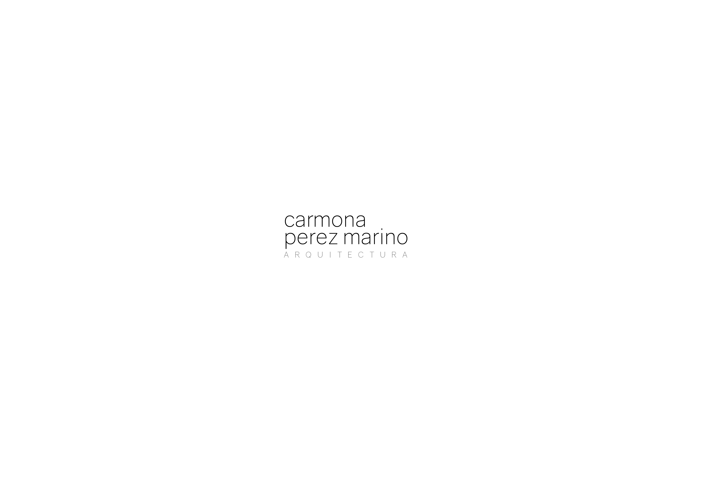

arquitectura
carmona perez marino nace del encuentro de tres miradas sobre una misma idea: que la arquitectura no se trata de objetos, sino de la vida que ocurre dentro de ellos.
Trabajamos desde el detalle hasta el territorio. Nos interesan los materiales nobles, la luz natural como material de proyecto y los espacios que envejecen bien.